Yuji Itadori es un joven con habilidades físicas extraordinarias, que lleva una vida común hasta que encuentra un dedo maldito. Este dedo pertenece a Sukuna, conocido como el "Rey de las Maldiciones". Para proteger a sus amigos de una maldición, Yuji decide ingerir el dedo, convirtiéndose en el receptáculo de Sukuna. Así, es introducido en el mundo de la energía maldita y las técnicas de hechicería por Satoru Gojo, uno de los hechiceros más poderosos.
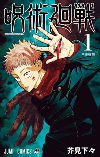En este arco se establecen las reglas básicas del universo: las maldiciones surgen de la energía negativa humana, existen técnicas especiales para combatirlas, y la misión principal es recolectar los dedos restantes de Sukuna para eliminarlos y evitar catástrofes.
Yuji, junto a sus compañeros Megumi Fushiguro y Nobara Kugisaki, enfrentan una maldición especial que ataca a jóvenes inocentes en un centro juvenil. Durante esta misión, Yuji muere momentáneamente, experimentando la fragilidad de la vida y la intensidad del mundo jujutsu.
Aquí se forja la relación entre los tres protagonistas, mostrando sus habilidades individuales y la dinámica de trabajo en equipo. Además, se expone la gravedad y el peligro real de enfrentar maldiciones poderosas para la primera vez.
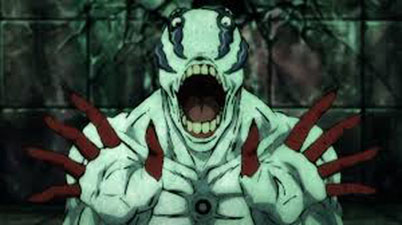Yuji conoce a Junpei Yoshino, un joven acosado que anhela una vida normal pero que termina siendo manipulado por Mahito, una maldición con la habilidad de deformar y manipular las almas. La relación entre Junpei y Mahito sirve para mostrar las consecuencias humanas y emocionales del mundo de las maldiciones.
La trágica muerte de Junpei, causada por Mahito, impacta profundamente a Yuji, quien se compromete a erradicar esta amenaza. Este arco explora temas oscuros como la manipulación, el dolor y la venganza, dando una carga emocional significativa a la historia.
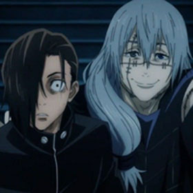La escuela de hechicería de Tokio realiza un intercambio con la escuela de Kyoto, inicialmente un torneo amistoso que rápidamente se convierte en una batalla real. Los estudiantes presentan sus técnicas y habilidades, destacando personajes como Panda, Maki Zenin y Toge Inumaki.
Durante el evento, llegan maldiciones poderosas como Hanami, que representan una amenaza directa al mundo humano. Este arco muestra el crecimiento de los estudiantes, las rivalidades y la unión frente a peligros mayores.
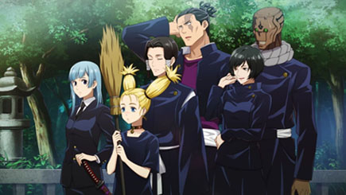Se narra la juventud de Satoru Gojo y Suguru Geto en la academia de hechicería. Su misión principal es proteger a Riko Amanai, recipiente de una técnica esencial para el equilibrio del mundo. En esta época aparece Toji Fushiguro, un asesino sin energía maldita que sorprende a todos por su gran poder físico y habilidades de combate.
Gojo desbloquea la habilidad de los Seis Ojos, volviéndose el hechicero más fuerte de su generación. Por otro lado, Geto comienza a mostrar signos de desacuerdo con la sociedad, marcando el inicio de su caída hacia el antagonismo.
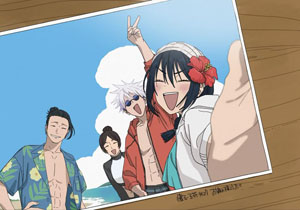 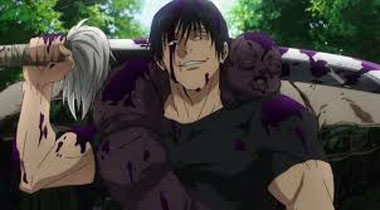 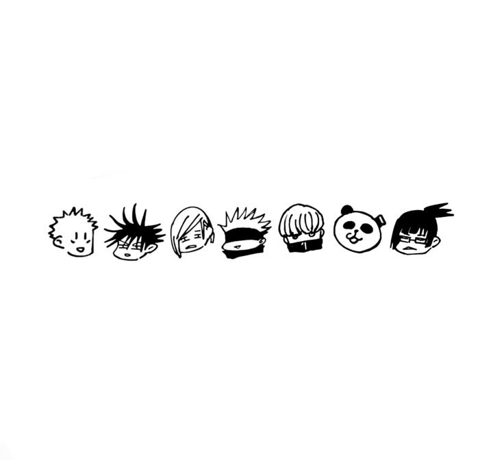 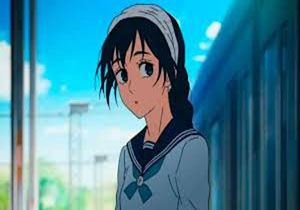Shoko Ieiri, la médica de la escuela y amiga cercana de Gojo, se encarga de las heridas tras la batalla con Toji. Este arco revela detalles sobre la vida de Toji, su odio hacia los hechiceros y su relación con Megumi Fushiguro. Además, se exploran las complejidades psicológicas y motivaciones de Toji, mostrando que no es un villano unidimensional.
La batalla entre Toji y Gojo deja una marca profunda en todos los personajes y abre preguntas sobre la naturaleza del poder y la familia.

Geto adopta una ideología extrema, considerando que los no hechiceros son inferiores y deben ser eliminados para un mundo "puro". Se convierte en antagonista principal y se enfrenta a Gojo tanto en poder como en ideales. Este arco profundiza en su caída y justificaciones, agregando capas a la trama y presentando al enemigo principal que influye en muchos eventos futuros.
Considerado el evento más oscuro y devastador de la serie hasta ahora, el Incidente de Shibuya ocurre durante la noche de Halloween. Kenjaku (poseyendo el cuerpo de Geto) orquesta una invasión masiva para sellar a Gojo y desatar maldiciones especiales. La ciudad queda sumida en el caos, con numerosas muertes y destrucción.
Yuji presencia la muerte de Kento Nanami y el sacrificio de Nobara Kugisaki, mientras Sukuna domina la ciudad, causando estragos. Aparecen personajes clave como Choso, y Megumi enfrenta desafíos que cambiarán su destino.
Este arco marca un punto de quiebre para toda la serie, con consecuencias que afectarán a todos los personajes y el mundo jujutsu en general.
Las secuelas del incidente generan una crisis profunda en la sociedad de hechiceros. Nuevos personajes y alianzas emergen mientras los sobrevivientes intentan reorganizarse. Yuji y sus compañeros entrenan y evolucionan para enfrentar las crecientes amenazas.
La historia se adentra en la psicología de los protagonistas, sus motivaciones y las nuevas técnicas que utilizarán en los conflictos venideros. Este arco sienta las bases para el futuro de la saga.
Protagonista: Yuta Okkotsu
Arco: Jujutsu Kaisen 0 / Prólogo
Yuta es un joven atormentado por la maldición de su amiga fallecida, Rika Orimoto. Entra al Colegio Técnico de Hechicería de Tokio bajo la tutela de Satoru Gojo. Durante este arco, se explora la idea del amor convertido en maldición y se presentan a Panda, Maki Zenin y Toge Inumaki. El enemigo principal es Suguru Geto, un ex-hechicero convertido en villano que planea liberar una gran cantidad de maldiciones en Japón.
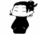
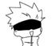
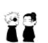
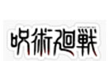
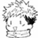